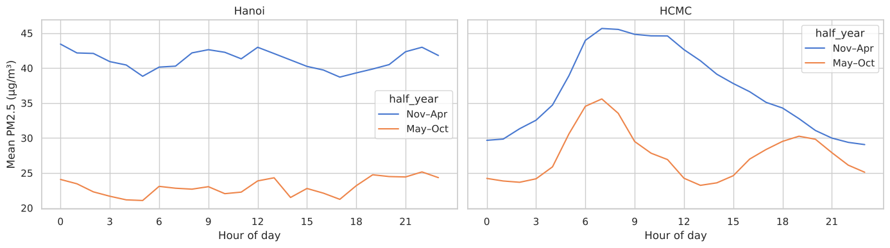
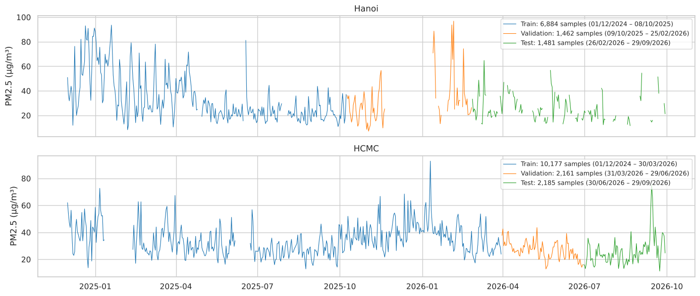
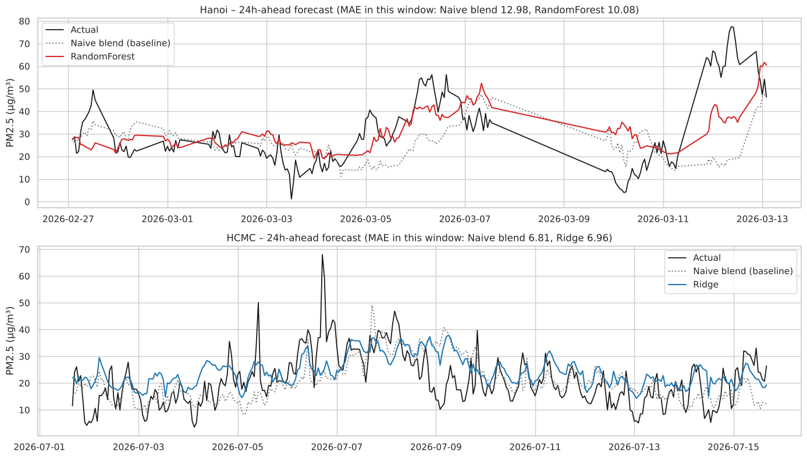

Programming Foundations for Data Analysis and Visualization · Semester 261 (2026–2027)
Part 3 — Time Series: 24-Hour-Ahead PM2.5 Forecasting, Hanoi vs Ho Chi Minh City
| Member | Student ID | Contribution |
|---|---|---|
| Nguyễn Văn Hoàng Khang | 2570754 | Time series: data collection, notebook, report |
- Notebook on GitHub · Open in Google Colab (Run all)
- Executed copy with all outputs · Dataset (CSV)
- PDF report · YouTube presentation: to be added
In one paragraph. We collected 499 days (04/07/2025 – 14/11/2026) of hourly PM2.5 (OpenAQ) and weather (Open-Meteo) data for one station in Hanoi and one in Ho Chi Minh City (HCMC), and forecast PM2.5 24 hours ahead using only information available at forecast time, scored on measured values only. Models are selected by monthly walk-forward validation over 11 months that include the whole winter, then evaluated once on the last 2.5 months (Test). On Test the selected model lowers the MAE of the strongest naive forecast (a blend of the current value and its 24h mean) by 5.3% in Hanoi (RandomForest, 11.53 → 10.91 µg/m³) and by 7.2% in HCMC (HistGradientBoosting, 11.93 → 11.07 µg/m³); block-bootstrap intervals say only the HCMC Test gain is clearly larger than chance. Against plain Persistence the gain is 9.6% / 14.1% and significant in both cities. The ML gain is concentrated in the winter peak; in months where the pollution level changes, the ML models lag behind and can lose to the naive forecast.
1. Problem and questions
At hour t, using the PM2.5 history and the current weather, forecast PM2.5 at t + 24h (the same hour tomorrow) — a time series regression problem. Hanoi (four seasons, winter temperature inversion) and HCMC (wet/dry seasons) have different pollution mechanisms, so we apply the same pipeline to each city independently and ask:
- How much better than a naive baseline can machine learning forecast PM2.5 one day ahead in each city?
- Which city is harder to forecast, and what drives PM2.5 in each place?
Three naive baselines set the bar: Persistence ŷ(t+24) = pm25(t) (also the 24h seasonal-naive forecast), the 24h mean, and a Naive blend w·pm25(t) + (1 − w)·mean24h(t) with w learned on each training window (w = 0.65–0.75 in Hanoi, 0.45–0.55 in HCMC). A model is only useful if it beats the strongest of them — the Naive blend.
2. Dataset (self-collected)
| Component | Source | Notes |
|---|---|---|
| PM2.5 – Hanoi | OpenAQ v3, station Công viên Nhân Chính – Khuất Duy Tiến (Hanoi Air Quality Monitoring Network) | Reference monitor; 3.6% of hours missing |
| PM2.5 – HCMC | OpenAQ v3, station CMT8 (AirGradient) | Low-cost sensor; 0.6% of hours missing |
| Weather | Open-Meteo Historical Weather API, at each station's coordinates | Temperature, humidity, precipitation, wind speed/direction, pressure, cloud cover |
Period 04/07/2025 – 14/11/2026, the same for both cities: 11,976 hourly rows × 11 columns per city on a complete hourly grid
(Vietnam time), where hours without a measurement are NaN. The crawler (scripts/crawl_air_quality.py) is reproducible and falls back to
Open-Meteo Air Quality (CAMS) if no OpenAQ key is available.
Choice of stations. scripts/check_station_coverage.py scores every OpenAQ PM2.5 sensor within 25 km of each city centre that
reported in the period. Besides the share of hours measured, it reports the worst hour of the day: a station that misses mostly certain hours
(e.g. afternoons) has gaps that are not at random, which would bias both the daily cycle and the forecast errors. The station used in an earlier
version of this project (46 Lưu Quang Vũ) measured 51.0% of hours overall but only 27.9% of its worst hour of the day;
Nhân Chính measured 96.4% (95.0% for its worst hour). HCMC has a single station with continuous data.
| City | Station (OpenAQ sensor) | Type | Hours measured | Worst hour of day | Worst month | Longest gap (h) |
|---|---|---|---|---|---|---|
| HCMC | CMT8 (AirGradient) (11357424) | low-cost | 99.4% | 98.2% | 96.5% | 8 |
| Hanoi | Cong vien Nhan Chinh - Khuat Duy Tien (13502151) | reference | 96.4% | 95.0% | 72.1% | 86 |
| Hanoi | Giai Phong - DH Bach Khoa (13502154) | reference | 92.8% | 89.2% | 78.8% | 136 |
| Hanoi | Dragon (AirGradient) (14581375) | low-cost | 72.3% | 71.1% | 0.0% | 3060 |
| Hanoi | 556 Nguyen Van Cu (13502150) | reference | 65.3% | 62.1% | 0.0% | 2934 |
| Hanoi | 46 Luu Quang Vu (7772032) | reference | 51.0% | 27.9% | 2.6% | 859 |
| Hanoi | Minh Khai - Bac Tu Liem (7772087) | reference | 14.8% | 1.6% | 0.0% | 3849 |
Key EDA findings. Mean hourly PM2.5 is similar (32.3 vs 31.2 µg/m³). The WHO guideline (15 µg/m³) applies to the 24-hour mean, so it is compared with daily means of days with at least 18 measured hours: it is exceeded on 92.2% of 476 valid days in Hanoi and 97.6% of 498 in HCMC. Hanoi is more volatile (std 20.4 vs 15.6) with a strong winter peak (monthly mean December 54.1 vs August 22.8 µg/m³) and is associated with cloud cover (Spearman -0.29), rain (-0.27) and pressure (+0.26); HCMC (January 45.0 vs July 23.4) has a 7h rush-hour peak and its strongest link to wind speed (-0.38). The autocorrelation drops from 0.95 / 0.88 at lag 1h to 0.59 / 0.47 at lag 24h, so a day-ahead forecast is much harder than a next-hour one. The data covers a single winter.


3. Data preparation
- Cleaning: values ≤ 0 or > 1000 µg/m³ and "stuck sensor" runs (≥ 6 identical hours) are set to missing (none found in this period, 0 / 0 invalid values). Hanoi has 65 gaps (48 of them ≤ 6h, longest 86h); HCMC 38 (longest 8h).
- Missing values without look-ahead: time interpolation would fill a gap with the value measured after it, which is unknown at forecast time.
So the target is always a measured value (never filled), and the features use a causal forward-fill of at most 6h — missing PM2.5 in the feature series
falls from 3.6% → 2.0% (Hanoi) and 0.6% → 0.0% (HCMC).
Samples without a current value or target are dropped (11,397 / 11,875 samples remain),
and remaining feature gaps use a median
SimpleImputerfitted on the training data. - Outliers: the IQR rule (k = 3) flags 99 (0.86%) and 78 (0.66%) hours. They are real pollution events, so they stay in the target;
only the PM2.5 features are clipped by a custom
IQRClippertransformer learned on the training data. - Features (23): PM2.5 lags (0–23h) and rolling statistics, weather at t plus 24h rain total, cyclic hour of the forecast time (numerical,
StandardScaler), and season, day of week and 8-sector wind direction (categorical,OneHotEncoder) — 39 columns after encoding. Calendar features describe the target time t + 24h, which is known in advance, so they do not leak. - Split (same dates for both cities): Test = samples issued from 01/09/2026 (1,775 per city);
Development = samples issued until 30/08/2026 (9,598 Hanoi / 10,076 HCMC), ending 24h before Test so that no
Development target falls in the Test period. Inside Development, walk-forward validation: for each month m from 10/2025 to 08/2026, every model
is refitted on all samples whose target is measured before m starts (an expanding window) and forecasts the samples issued in m.
Each Development hour from 10/2025 on is forecast exactly once, by a model that never saw it, and the validation forecasts cover the whole winter.
All preprocessing lives in one
ColumnTransformer+Pipeline, fitted only on the training data of each fit.

4. Modeling and model selection
Models: three naive baselines (Persistence, 24h mean, Naive blend), Ridge, RandomForest and HistGradientBoosting.
The three ML models are tuned with GridSearchCV on TimeSeriesSplit(n_splits=3, gap=24) over the Development set (MAE), then kept fixed.
A CityForecaster class runs the whole flow for one city. Pooled walk-forward results over the 11 months (the selected model of each city in bold;
the Test set is never used for selection):
| Model | MAE Hanoi | MAE HCMC | R² Hanoi | R² HCMC |
|---|---|---|---|---|
| Persistence (baseline) | 13.788 | 10.895 | 0.183 | -0.030 |
| Mean 24h (baseline) | 14.836 | 10.850 | 0.127 | 0.130 |
| Naive blend (baseline) | 13.358 | 9.921 | 0.247 | 0.208 |
| Ridge | 12.521 | 9.630 | 0.383 | 0.299 |
| RandomForest | 12.453 | 9.751 | 0.354 | 0.280 |
| HistGradientBoosting | 12.646 | 9.593 | 0.334 | 0.304 |
All three ML models beat the Naive blend on the pooled walk-forward forecasts, but by little, and their MAEs are within 2% of each other. Cross-validation prefers simple models (shallow trees, at most 4 leaves per boosting tree), and several selected values lie at the edge of the grid even after widening it twice — a sign that the 24h-ahead signal is weak. Because the hyperparameters were tuned on the whole Development set, the walk-forward scores of the ML models are slightly optimistic; Test is not affected.

Why the ML gain depends on the month. The bias (mean of forecast − actual) shows that the ML models lag behind changes of the pollution level. When the level rises they forecast too low: Hanoi RandomForest has a bias of -7.8 µg/m³ in November 2025 (mean measured 38.4) and -7.1 in April 2026 (40.1, up from 30.3 in March); HCMC HistGradientBoosting -6.9 in October 2025. When the level falls they forecast too high (HCMC February 2026: +5.8). The Naive blend has no intercept and follows the current level, so its bias stays small. In November 2025 the Hanoi model had only seen July–October, the cleaner months.
5. Results on the Test set
Each model is refitted on the whole Development set and evaluated once on Test (01/09/2026 – 13/11/2026). The model chosen by walk-forward validation is shown in bold. "Gain" = MAE reduction relative to the reference (+ = better).
| City | Model | MAE (µg/m³) | RMSE (µg/m³) | R² | Gain vs Persistence | Gain vs Naive blend |
|---|---|---|---|---|---|---|
| Hanoi | Persistence (baseline) | 12.07 | 16.19 | 0.188 | +0.0% | -4.7% |
| Hanoi | Mean 24h (baseline) | 12.95 | 16.67 | 0.139 | -7.3% | -12.4% |
| Hanoi | Naive blend (baseline) | 11.53 | 15.25 | 0.279 | +4.5% | +0.0% |
| Hanoi | Ridge | 10.55 | 13.79 | 0.411 | +12.5% | +8.4% |
| Hanoi | RandomForest | 10.91 | 14.30 | 0.367 | +9.6% | +5.3% |
| Hanoi | HistGradientBoosting | 10.80 | 14.03 | 0.390 | +10.5% | +6.3% |
| HCMC | Persistence (baseline) | 12.88 | 17.06 | -0.160 | +0.0% | -7.9% |
| HCMC | Mean 24h (baseline) | 13.00 | 16.60 | -0.099 | -0.9% | -8.9% |
| HCMC | Naive blend (baseline) | 11.93 | 15.62 | 0.028 | +7.4% | +0.0% |
| HCMC | Ridge | 11.10 | 14.63 | 0.146 | +13.9% | +7.0% |
| HCMC | RandomForest | 10.83 | 14.47 | 0.166 | +15.9% | +9.2% |
| HCMC | HistGradientBoosting | 11.07 | 14.61 | 0.149 | +14.1% | +7.2% |

Are the differences real? Forecast errors are strongly autocorrelated, so an ordinary bootstrap over hours would be far too optimistic. We use a paired non-overlapping block bootstrap (Carlstein, 1986): the forecasts (pooled walk-forward, or Test) are grouped into 3-day calendar blocks (111 / 25 blocks), whole blocks are resampled with replacement 2,000 times, and the MAE gain 1 − MAEA/MAEB of the best model over each competitor is recomputed on the same hours; the 2.5th–97.5th percentiles give a 95% percentile interval. Bold = the interval excludes 0. The intervals are descriptive (no multiple-comparison correction): the conclusions rest on the four comparisons fixed in advance, best model vs Naive blend on walk-forward and on Test for each city.
| City | Comparison | Walk-forward gain [95% CI] | Test gain [95% CI] |
|---|---|---|---|
| Hanoi | RandomForest vs Persistence (baseline) | +9.7% [+2.0, +16.5] | +9.6% [+1.5, +17.3] |
| Hanoi | RandomForest vs Naive blend (baseline) | +6.8% [-0.9, +13.7] | +5.3% [-3.4, +13.3] |
| Hanoi | RandomForest vs Ridge | +0.5% [-2.5, +3.8] | -3.4% [-9.3, +1.6] |
| HCMC | HistGradientBoosting vs Persistence (baseline) | +12.0% [+7.4, +15.8] | +14.1% [+8.7, +19.4] |
| HCMC | HistGradientBoosting vs Naive blend (baseline) | +3.3% [-1.4, +7.6] | +7.2% [+1.7, +12.6] |
| HCMC | HistGradientBoosting vs Ridge | +0.4% [-1.8, +2.4] | +0.2% [-2.8, +3.0] |


Answer to question 1. Against plain Persistence, machine learning gains 9.6% / 14.1% on Test, significant in both cities on both evaluation sets. Part of that comes from simply smoothing the current value: against the best naive forecast the gain is 5.3% in Hanoi, which is not distinguishable from zero (walk-forward: +6.8% [-0.9, +13.7], borderline depending on the block length), and 7.2% in HCMC, significant on Test but not on walk-forward (+3.3% [-1.4, +7.6]). All point estimates are positive, so the most likely situation is a small real gain of a few percent that one year of data cannot pin down. Which ML model is best is not established in either city.
6. Error analysis and drivers
Actual and forecast PM2.5 are put into concentration bands defined by the US EPA 2024 PM2.5 breakpoints (Good ≤ 9.0, Moderate ≤ 35.4, USG ≤ 55.4, Unhealthy ≤ 125.4 µg/m³; values truncated to 0.1 first) to build a band confusion matrix. The official AQI uses a 24-hour average, so these hourly bands are not official AQI values.

The main weakness is under-forecasting polluted hours: forecasts are pulled towards the mean, so the model follows the general level but is not a reliable early-warning tool. By hour of the forecast time, the error is highest in the early morning (Hanoi 13.8 µg/m³ at 6h on Test, HCMC 11.1 at 7h on walk-forward), when night-time accumulation and the morning rush hour change the level fastest.

pm25_lag_0 (2.37), surface_pressure (0.17), rain_24h (0.17), wind_speed_10m (0.12), pm25_lag_1 (0.11). HCMC: pm25_lag_0 (0.64), hour_cos (0.24), rain_24h (0.10), pm25_roll_mean_24 (0.06), surface_pressure (0.05). Correlated PM2.5 lag features share their importance, so groups are also shuffled together — Hanoi: PM2.5 history +3.82, Weather +0.95, Calendar -0.06; HCMC: PM2.5 history +1.55, Weather +0.17, Calendar +0.26.Answer to question 2. Recent PM2.5 is the most important group in both cities. Hanoi then depends on weather (pressure, rain, wind), while the calendar adds nothing on the Test period; HCMC depends on the hour of day (daily traffic rhythm, 7h peak in the EDA). Hanoi is the harder city in absolute terms (higher volatility and winter peaks, walk-forward MAE 12.45 vs 9.59 µg/m³), and in both cities the relative gain over the naive forecast is small.
7. Conclusions, limitations and future work
- Conclusion: one reusable pipeline, trained independently per city and selected by walk-forward validation, lowers the Test MAE of the strongest naive forecast by +5.3% [-3.4, +13.3] in Hanoi and +7.2% [+1.7, +12.6] in HCMC (gain [95% block-bootstrap CI]), and of Persistence by 9.6% / 14.1% (both significant). The gain is concentrated in the stable winter peak; in months where the level changes, the ML models lag behind the naive forecast.
- Limitations: a single winter (the Hanoi station started reporting in 07/2025), so winter performance rests on the walk-forward months only and the Test period covers the start of the polluted season, not its peak; one station per city (HCMC is a low-cost sensor and the only HCMC station with continuous data); hyperparameters tuned on the whole Development set (walk-forward scores slightly optimistic) with several values at the grid edge; weather features are observations at t, not forecasts for t + 24h; polluted hours are under-forecast.
- Future work: repeat the walk-forward evaluation after a second winter (from 12/2026); add weather forecasts and more stations; add features that react to level changes; quantile regression or an exceedance classifier for early warning; nested tuning inside each walk-forward fold.
All numbers in this report are read automatically from the executed notebook (scikit-learn 1.9.1, random_state = 42). Tree-model results can shift by a few hundredths of µg/m³ across scikit-learn versions; Ridge and the naive baselines do not change.